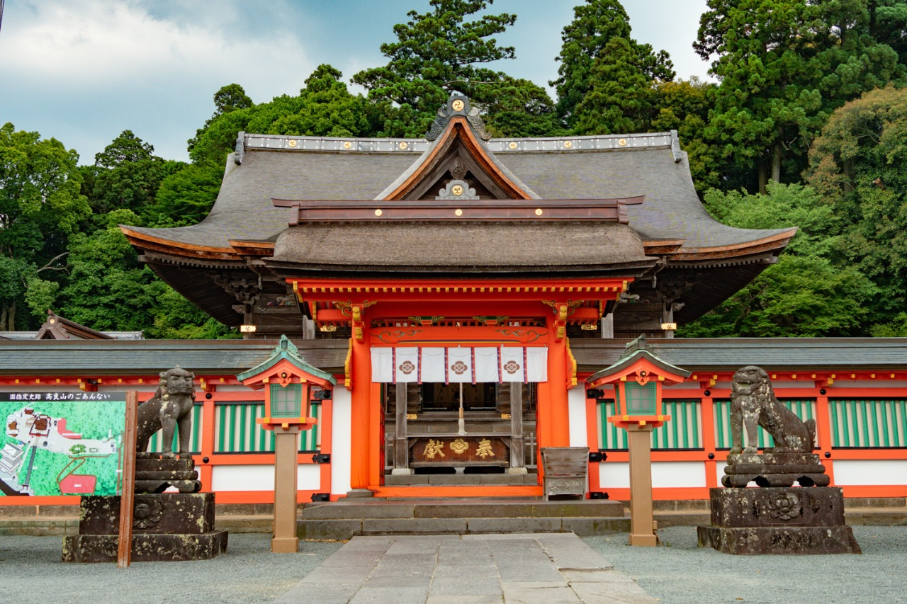
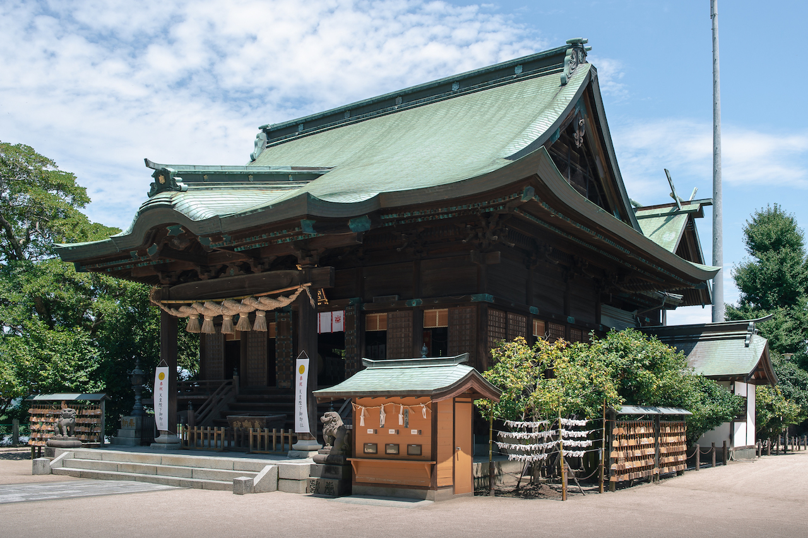
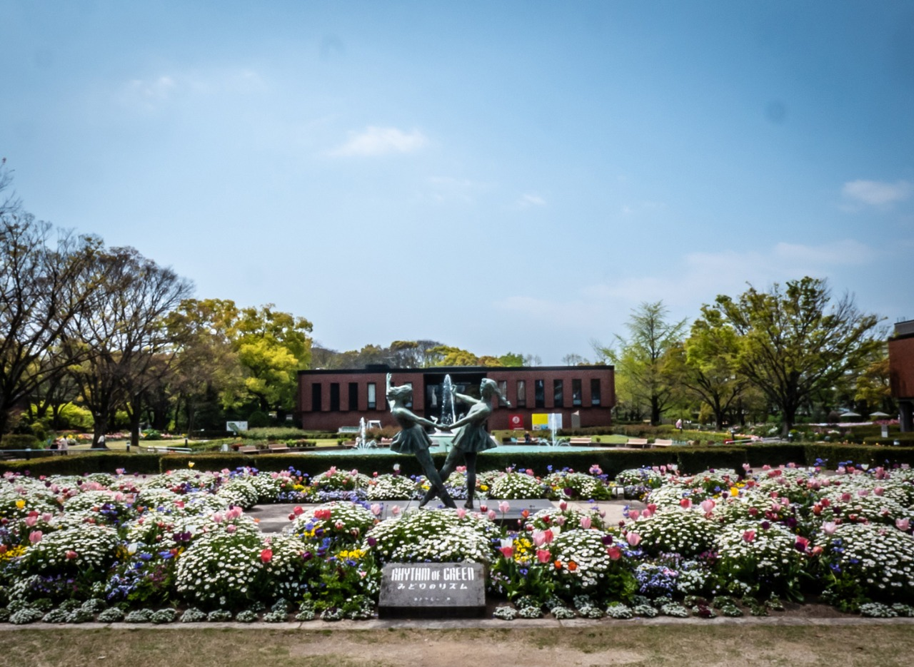

KURUME CITY
長い歴史と伝統が息づくまち。
久留米の歴史と文化をご紹介します。
久留米市には、古くから受け継がれてきた 歴史や伝統文化があります。
神社や寺などの歴史的な場所をはじめ、 久留米絣などの伝統工芸や地域に根付いた文化が 現在も大切に受け継がれています。
久留米市を代表する伝統工芸品のひとつです。 藍色を中心とした美しい模様が特徴で、 江戸時代から続く伝統が現在にも受け継がれています。

高良山に鎮座する歴史ある神社です。 久留米を代表する歴史的な場所のひとつで、 境内からは久留米市街地を眺めることもできます。

久留米市にある全国の水天宮の総本宮です。 水に関わる信仰で知られ、 長い歴史を持つ久留米の代表的な文化スポットです。

美術館や音楽ホール、日本庭園などがある 久留米の文化施設です。 芸術や文化に触れることができる場所として 多くの人に利用されています。